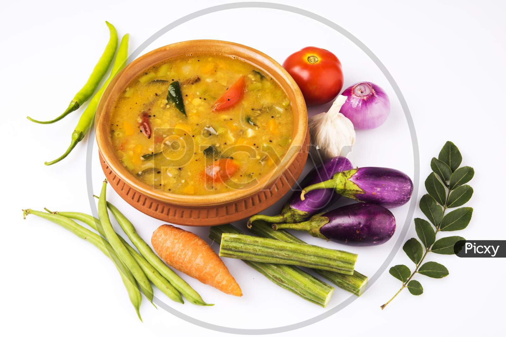

SAMBAR
Ingredients
lentils, mixed vegetables, tamarind, herbs, spices & a special aromatic spice powder known as sambar powder.

Process
In a small pan or tadka pan, heat 2 tablespoons gingelly oil. ...
Let the mustard seeds crackle.
Then add 1 to 2 dry red chillies (halved and seeds removed).
Immediately add 10 to 12 curry leaves, 5 to 6 fenugreek seeds (methi seeds)
and 2 pinches of asafoetida (hing).